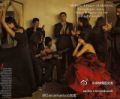

//@逍遥子3442: 一再听到男人、女人互相指责、谩骂 ，有没有人反思过，男人为何以金钱和权利作所谓的春药？不是女人最关注和赞赏鼓励的吗？高富帅，是男人喜欢的吗？//一大半原因是中国男人的低劣品味，40岁就以成功自居挺着大啤酒肚YY 20岁女人，钱和权是他们最好的春药，一旦失去就沦为性无能@麻辣情医吴迪:昨天我跟拉丁教练@王劭宾Robin 学习斗牛舞，要把大裙摆甩起来，有很多弗拉明戈的元素，超帅！跟我做过心理咨询的女人说，看到你跳舞，就好像一朵花在绽放。说得很好，那么你绽放过吗？你26岁就叫自己剩女，你34岁就管自己叫老女人守在死亡婚姻里？看着我，我比你们大那么多，我可以绽放，你就不能？ 